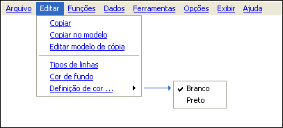

| Menu
Editar |
|
Descrição
O menu “Editar” provê acesso a
ferramentas de edição e cópia da janela do R_DAT para a Área de
Transferência
do Windows.
Através dele é
possível realizar as seguintes operações:
- Copiar a imagem
da janela (com ou sem formatação);
- Editar o modelo
de formatação para cópia;
- Editar os tipos
de linhas dos plotes;
- Alterar a cor
de fundo dos gráficos;
- Definir o
esquema de cores da janela.
Estrutura
do menu “Editar”:

| |
Início |
Copiar |
|